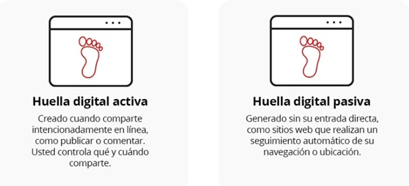
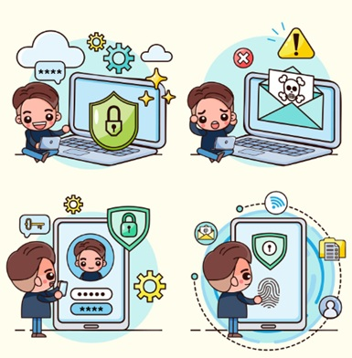

👣 Bienvenidos a conocer tu huella digital
Hoy usamos Internet para muchas cosas: jugar, aprender, buscar información, mirar videos o hablar con amigos. Cada vez que usamos un celular, una tablet o una computadora, dejamos información en Internet.
Esa información que dejamos se llama huella digital.
Así como cuando caminamos en la arena dejamos huellas, en Internet también dejamos marcas que pueden permanecer mucho tiempo.
👣 ¿Qué es la huella digital?
La huella digital es toda la información que dejamos en Internet cuando usamos dispositivos.
- Subir una foto
- Escribir un comentario
- Dar “me gusta”
- Registrarse en juegos
- Buscar información
🟢 Huella digital activa
🔵 Huella digital pasiva
Es lo que decides compartir: fotos, comentarios, videos o publicaciones.
Es la información que se guarda sin que lo notes: visitas, clics o tiempo en sitios.

📱 Lo que dejo en Internet
- 📷 Fotos
- 🎥 Videos
- 💬 Comentarios
- 👍 Reacciones
- 🧾 Datos
- 🎮 Juegos
- 📍 Ubicación
⚠️ Riesgos en Internet
- Compartir información personal
- Hablar con desconocidos
- Subir fotos sin pensar
- Recibir mensajes incómodos
- Publicar contenido ofensivo
🧠 Piensa antes de publicar
¿Es seguro? ¿Lo verían tus padres? ¿Debe quedar en Internet?
🛡️ Cómo proteger tu huella digital

- No compartas datos personales
- Usa contraseñas seguras
- No aceptes desconocidos
- Piensa antes de publicar
- Respeta a los demás
🎮 Actividad: ¿Verdadero o Falso?
1. Todo lo que publico desaparece rápido.
2. Mi huella digital puede afectar mi futuro.
3. Dar “me gusta” también deja huella digital.
4. Solo lo que publico forma mi huella digital.
🌟 Mensaje final
Tu huella digital es importante. Piensa antes de publicar, cuida tu información y respeta a los demás.